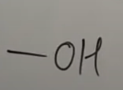

IUPAC Nomenclature : Naming of Polyfunctional Compounds
(You Tube Playlist Link)
- Some Basic Principles and Naming Of Alkanes
- Complex Substituents and Cycloalkanes
- Naming Of Alkenes and Alkynes
- Functional Groups with Secondary Suffix
- Naming Of Alcohols
- Naming Of Aldehydes and Ketones
- Naming of Carboxylic Acids and Acid Halides
- Naming Of Acid Amides and Esters
- Naming of Cyanides, Amines, and Ethers
- Naming of Polyfunctional Compounds (More than One Functional Group)
- Naming Of Aromatic Compounds - Benzene Rings
- Naming Of Bicyclo and Spiro Compounds
-
Introduction
- There can only be one primary functional group in a compound.
- The primary functional group is as per a pre-defined priority order, and the remaining are to be considered substituents.
-
Mnemonic for priority order and
suffix naming
"Car S An Tro (aisi thi) jaise Ambassador CIAKA Tempo (thi)."
Serial No Mnemonic Group FG Suffix Substituent Prefix TFG when attached directly to C-ring 1 Car Oic acid Carboxy Carboxylic Acid 2 S 
Sulphonic acid Sulpho X 3 An Oic anhydride X X 4 Tro 
Alkyl Alkanoate Alkoxy Carbonyl Alkyl Carboxylate 5 Aisi Oyl halide Haloformyl Carbonyl halide 6 Ambassador 
Amide Carbamoyl Carboxamide 7 C 
Nitrile Cyano Carbonitrile 8 I Iso-nitrile Iso-cyano X 9 A 
Al Formyl/Oxo Carbaldehyde 10 K 
One Oxo/keto X 11 A  Ol Hydroxy X 12 T 
Thiol Mercapto X 13 Am 
Amine Amino X 14 Po Epoxy X X
-
Examples and Practice
-
< href="https://youtu.be/RN7_Q38RePk?t=1753" class="link_no_style" target="_blank" >3-oxo butan-1-oic acid
-
-
Poly Functional Group attached to Ring : Examples and Practice
-